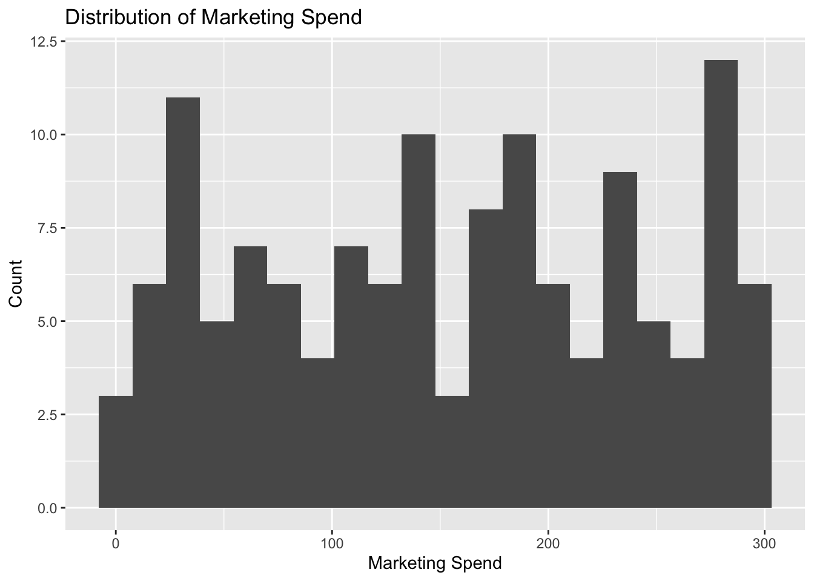
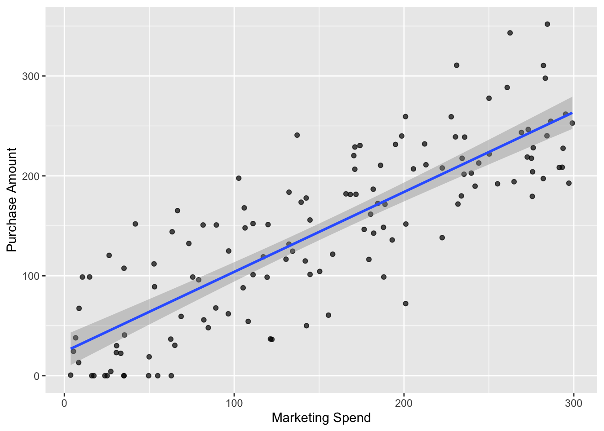
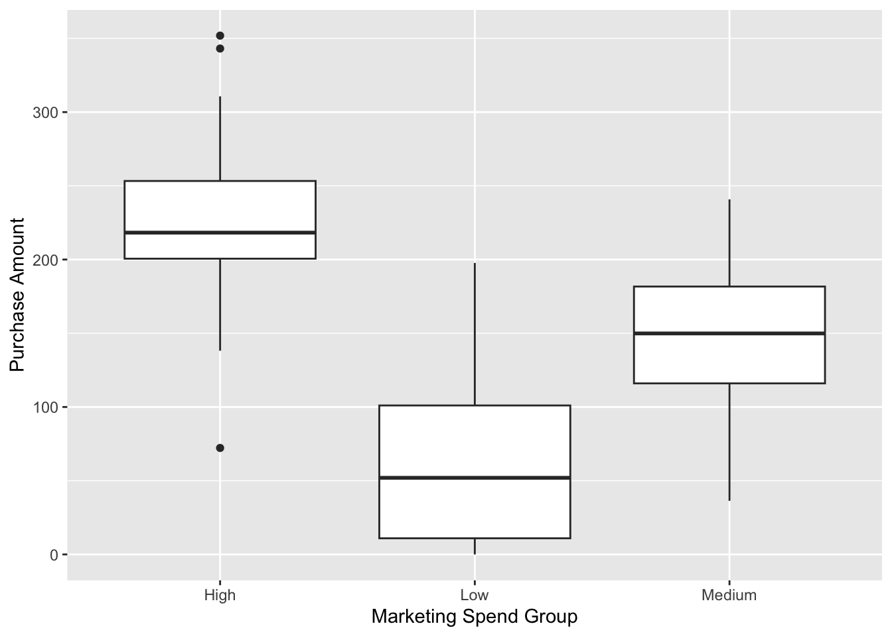

Rows: 150
Columns: 7
$ customer_id <chr> "32592582_c0001", "32592582_c0002", "32592582_c0003", …
$ signup_date <chr> "16/4/2025", "2/6/2025", "18/12/2024", "Jan 15, 2026",…
$ marketing_spend <dbl> 182.13, 6.66, 8.44, 165.83, 262.46, 180.34, 222.48, 21…
$ visits <dbl> 4, 6, 2, 4, 9, 8, 6, 5, 10, 4, 5, 1, 3, 5, 3, 3, 5, 8,…
$ purchase_amount <dbl> 142.66, 37.94, 13.18, 182.01, 343.11, 161.66, 138.17, …
$ segment <chr> "Consumer", "SMB", "Consumer", "Consumer", "SMB", "Con…
$ notes <chr> "returned", NA, "N/A", NA, NA, NA, NA, NA, "N/A", NA, …Assignment 1 Quarto Document
Part B: Creating a reproducible report
Introduction section (2 points)
Using markdown, write a 4 sentence maximum motivation of what you are going to research and why. Make sure it is relevant to your dataset.
This report investigates whether higher marketing spend per customer leads to increased purchase amounts in an online retail setting.
The dataset represents a personalised marketing campaign where spending varied across customers through channels such as advertisements, emails, and coupons.
Understanding this relationship is important for evaluating the effectiveness and efficiency of marketing investment.
The findings will help determine whether increased spending generates meaningful returns or leads to diminishing benefits.
Research Question section (2 points)
Using markdown, discuss in 3 sentences maximum, the specific question that you are going to investigate or answer in this report using your selected data.
This report examines whether higher marketing spend per customer leads to greater purchase amounts.
Specifically, it investigates the relationship between the amount spent on personalized marketing efforts and the revenue generated from each customer.
The analysis aims to determine whether increased spending results in higher returns or diminishing effectiveness.
Dataset Introduction section (3 points)
In this section, briefly describe your data (i.e. what the data is measuring or recording) in five sentences maximum using markdown.
The dataset records customer-level information from a personalised marketing campaign, including marketing spend, purchase amount, and number of visits.
The key variables of interest are marketing_spend, which represents the amount spent targeting each customer, and purchase_amount, which reflects the revenue generated from each customer.
Additional variables such as visits, customer segment, and signup date provide further context on customer activity and characteristics but are not overly significant to this data set.
Before analysis, the dataset was cleaned by - Removed rows with missing values in purchase amount because we’re measuring how higher marketing spend leads to higher purchase amount -standardising date formats -formatting numerical formats Irrelivant variables such as segment and notes were excluded due to their insignificance and irrelivance
To do this, you will need to clean your dataset. Include a description of this cleaning process (not the code) in the report. The code to clean the dataset must be included in the Quarto file, but not in the report.
#Initial Look at the data
Clean data
data <- data %>% drop_na(marketing_spend, purchase_amount) %>% mutate( marketing_spend = as.numeric(marketing_spend), purchase_amount = as.numeric(purchase_amount), visits = as.numeric(visits), signup_date = as.Date(signup_date), segment = as.factor(segment) ) %>% select(-notes) %>% distinct()
## **Dataset Description subsection (5 points)**
**Create a subsection that will report details about your data. You must include the size of the dataset such as the number of observations, variables and variable types. You must include a sentence that includes inline R code describing the number of variables and observations in your dataset.**
The dataset contains **132** observations and **6** variables, capturing customer-level information from a personalised marketing campaign.
The dataset includes a mix of numeric variables (e.g., marketing_spend, purchase_amount, visits), a categorical variable (segment), and a date variable (signup_date).
**Create two other summaries of your data, one as a plot and one as a table. Examples include counts of certain variables in groups, or summary statistics of numeric variables. Make sure these summaries are providing a broader context to the report and are not just arbitrary commentaries.**
::: {.cell}
```{.r .cell-code}
data %>%
summarise(
avg_spend = mean(marketing_spend),
avg_purchase = mean(purchase_amount),
avg_visits = mean(visits)
)# A tibble: 1 × 3
avg_spend avg_purchase avg_visits
<dbl> <dbl> <dbl>
1 152. 146. 5.33:::
data %>%
group_by(segment) %>%
summarise(avg_purchase = mean(purchase_amount))# A tibble: 3 × 2
segment avg_purchase
<fct> <dbl>
1 Consumer 147.
2 Enterprise 136.
3 SMB 147.summary(data) customer_id signup_date marketing_spend visits
Length:132 Min. :0001-02-20 Min. : 3.71 Min. : 1.000
Class :character 1st Qu.:0009-03-13 1st Qu.: 75.04 1st Qu.: 3.000
Mode :character Median :0018-06-04 Median :152.94 Median : 5.000
Mean :0017-07-31 Mean :152.42 Mean : 5.333
3rd Qu.:0026-01-04 3rd Qu.:231.19 3rd Qu.: 7.000
Max. :0031-08-20 Max. :299.13 Max. :12.000
NA's :22
purchase_amount segment
Min. : 0.00 Consumer :76
1st Qu.: 84.04 Enterprise:16
Median :151.54 SMB :40
Mean :145.84
3rd Qu.:209.10
Max. :351.87
ggplot(data, aes(x = marketing_spend)) +
geom_histogram(bins = 20) +
labs(
title = "Distribution of Marketing Spend",
x = "Marketing Spend",
y = "Count"
)
Results Section
Using visualisations of the data, discuss the answer to your research questions. You must: Create 2 figures maximum of your data that will help you answer your research question. Each figure must have a caption using the options inside the R code chunk. Create the figures using the ggplot2 package. The figures must have captions, and must be referred to in the text of the results section.
ggplot(data, aes(x = marketing_spend, y = purchase_amount)) +
geom_point(alpha = 0.7) +
geom_smooth(method = "lm", se = TRUE) +
labs(
x = "Marketing Spend",
y = "Purchase Amount"
)`geom_smooth()` using formula = 'y ~ x'
data <- data %>%
mutate(
spend_group = case_when(
marketing_spend < quantile(marketing_spend, 0.33) ~ "Low",
marketing_spend < quantile(marketing_spend, 0.67) ~ "Medium",
TRUE ~ "High"
)
)ggplot(data, aes(x = spend_group, y = purchase_amount)) +
geom_boxplot() +
labs(
x = "Marketing Spend Group",
y = "Purchase Amount"
)
As well as the figures, you must also include a paragraph describing these results and how they link back to your research question. Remember, you can use inline code to extract certain numbers automatically.